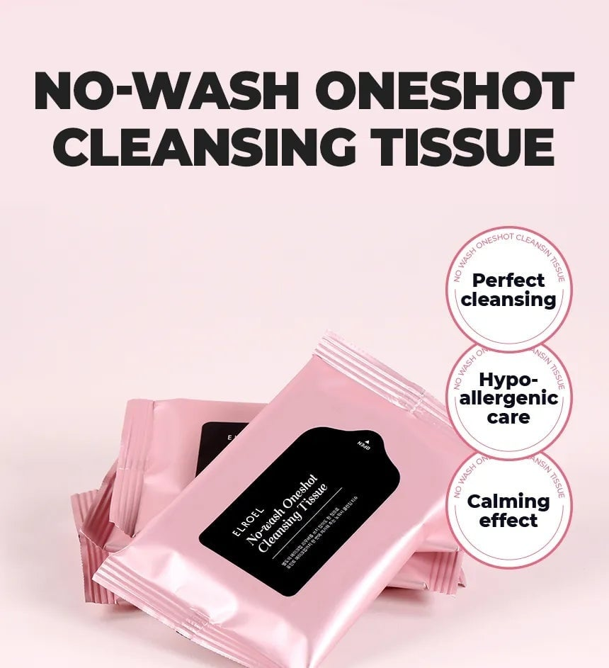
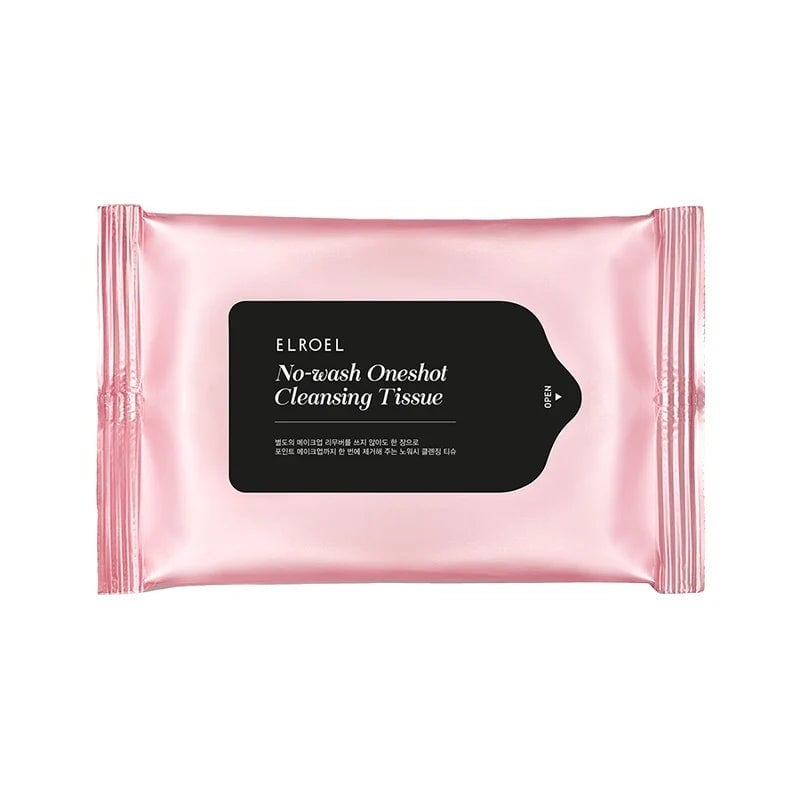
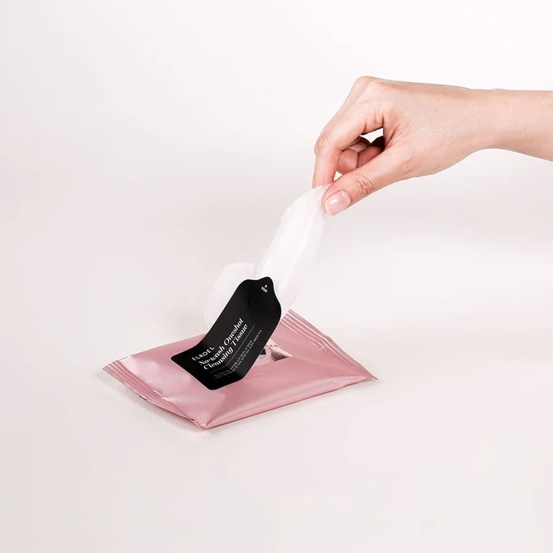

<div> <table style="border-collapse: collapse; width: 99.9809%;" border="1"><colgroup><col style="width: 49.9522%;"><col style="width: 49.9522%;"></colgroup> <tbody> <tr> <td> <div><span style="font-size: 14pt;"><strong>Elroel Servetele demachiante</strong></span></div> <div><strong><span style="font-size: 14pt;">46g</span></strong></div> <div><span style="font-size: 14pt;">Principalele beneficiile principale ale servetelelor demachiante Elroel: curatare perfecta, ingrijire hipoalergenica si un efect vizibil de calmare, obtinute prin calitatea formulei, produsul fiind un aliat ideal pentru curatarea delicata si reconfortanta a pielii, chiar si in deplasare.</span></div> </td> <td></td> </tr> <tr> <td></td> <td><span style="font-size: 14pt;">Servetelele demachiante Elroel No-wash Oneshot Cleansing Tissue sunt prezentate intr-un ambalaj roz pal, elegant si compact. Concepute pentru o curatare rapida si eficienta fara clatire, acestea ofera o solutie practica si igienica pentru indepartarea machiajului si a impuritatilor, lasand pielea curata in orice moment.</span></td> </tr> <tr> <td><span style="font-size: 14pt;">Deschiderea facila si utilizarea practica a servetelelor demachiante Elroel. Sistemul de sigilare readeziv permite extragerea individuala a fiecarui servetel matasos, mentinand in acelasi timp umiditatea si prospetimea formulei intacte pentru o utilizare confortabila si eficienta la fiecare aplicare pe ten.</span></td> <td></td> </tr> </tbody> </table> </div>